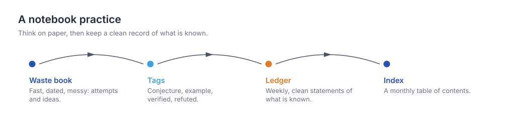

Guides · Philosophy
Thinking on paper: research notebooks
Published papers hide how research was done. Notebooks keep it. From Newton's Waste Book to Faraday's numbered diaries, the great experimenters thought on paper. Here is what they did, and a simple notebook practice for your own research.
Path · Thinking about science · step 4 of 4

A published paper is not a record of how its results were found. Dead ends, wrong guesses and false starts disappear, and a clean argument remains. The record of how research is actually done lives elsewhere, in notebooks. Their history shows that the best researchers used them not only as memory, but as a tool for thinking.
A short history#
- Commonplace books. In the Renaissance, scholars copied quotations and facts into personal notebooks organised by theme. Natural philosophers such as Robert Boyle and Robert Hooke adapted the habit to record their own observations.
- Newton's Waste Book. Newton took over an unfinished notebook of his stepfather and filled it with mathematics and physics. Bookkeepers called a "waste book" the place for rough notes, later copied neatly into a ledger. Newton returned to it for years, and it fed his later work.
- Starkey's tags. The seventeenth-century chemist George Starkey marked each step of his experiments with labels such as conjectural process, probable conclusion, observation, criticism and refuted by fire, that is, rejected by experiment.
- Faraday's diary. Michael Faraday kept a laboratory diary for over forty years and numbered its paragraphs, more than sixteen thousand of them. He recorded failures as well as successes and added indexes when it grew too large. His memory was poor, and he still sometimes repeated experiments he had forgotten.
- Joule's numbers. James Joule kept terse, numerical notebooks written as he measured, close to the excise books of the brewing trade he came from.
Two styles appear: the narrative notebook, which tells what happened and what it means, and the numerical notebook, which records data as it comes. Most researchers need both.
Why notebooks matter now#
- Memory is unreliable. Faraday repeated forgotten experiments, and the chemist Joseph Priestley admitted forgetting what he had published. You will forget your failed attempts first.
- Writing is thinking. Newton's notebook was an extension of his mind, not an archive. Writing an argument down shows where it breaks.
- The path matters later. When a referee asks why you did not try another method, the answer is in your notebook. When you write the thesis, so is the story of how the results came.
A notebook practice#
- Keep a waste book and a ledger. The waste book is fast, messy and dated: calculations, ideas, failed attempts. The ledger, weekly, records in clean form what you now know. In mathematics, the ledger can be a LaTeX file of verified statements and proofs.
- Date and number every entry, as Faraday did. A page you cannot find is a page you do not have.
- Tag your claims. Borrow Starkey's idea and mark each entry: conjecture, example, proof idea, verified, refuted. Refuted entries stay, with the reason.
- Write at the time, not at the end of the day. Faraday himself advised his students to record results while the work was in front of them.
- Index regularly. A short table of contents per month makes old ideas findable.
- Paper or screen, deliberately. Handwriting is more flexible for diagrams and thinking. Digital notes are searchable and easy to back up. Many researchers think on paper and keep the ledger digital.
Checklist#
- Every entry in my notebook is dated.
- I record failed attempts with the reason they failed.
- My claims are tagged as conjecture, verified or refuted.
- Once a week, I copy what I now know into a clean ledger.
- I can find an idea from three months ago in under five minutes.
Summary#
- Papers hide the path of research. Notebooks keep it.
- The great experimenters used notebooks to think, not only to remember.
- Keep a dated waste book for rough work and a clean ledger for what is known.
- Tag claims, keep refutations, write at the time, index regularly.
Further reading#
This guide draws on an essay published on Substack:
- Ulkar Aghayeva, A Brief History of Lab Notebooks, Asimov Press, 2026.
For the history in depth, see Frederic L. Holmes, Jürgen Renn and Hans-Jörg Rheinberger (eds.), Reworking the Bench: Research Notebooks in the History of Science (2003).
Discussion
Questions, corrections and your own experience are welcome. Comments live in the forum, on GitHub Discussions, with Markdown and LaTeX.